1. 数控机床主轴控制功能
- 实现主轴速度控制：CNC速度控制.PMC速度控制及特殊S码控制
- 实现主轴位置控制：主轴定位控制、主轴定向准停控制及伺服主轴控制
- 主轴功能控制：主轴自动换挡功能.主轴刚性攻丝功能及主轴CS轴功能
- 主轴辅助功能控制：主轴刀具松开/加紧控制，主轴冷却及润滑控制
2. 主轴电动机标准参数初始化过程：
主轴模块的FROM出厂时装载的主轴电动机标准参数，主轴电动机初始化就是通过主轴串行总线把出厂时的标准参数装载到系统静态存储器SRAM中；当系统再次上电时，系统将静态存储器SRAM存储的电动机参数装在到系统工作存储器(动态存储器DRAM中)，实现主轴的实时控制。
3. 串行数字主轴电动机参数初始化操作
3.1 打开实验仿真系统软件
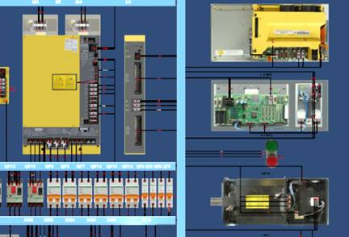按机床启动按钮启动仿真操作平台。
(1) 主轴速度串行数字控制系统参数的设定 FANUC-31iB/0iD系统参数设定8133#5设定为“0”使用串行输出（0-使用，1-不使用）3716#0设定为“1”主轴速度控制（0-为模拟量，1-为串行数字） 3701#4#1:串行主轴的数目（00-1个主轴，10-两个主轴） 3717设定为-1”连接的驱动器(0-无放大器，1、2、3-分别为第1-3主轴放大器） 注意：封主轴驱动（主轴报警的屏蔽）方法：参数3717设定为
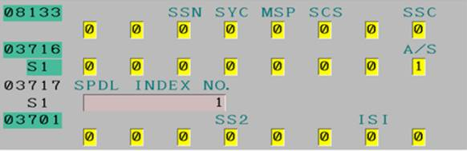(2) 正确输入主轴电动机ID代码到系统参数（系统参数写保护PWE=1 > FANUC-31 i/Oi系统：系统主轴电动机ID代码参数为4133;
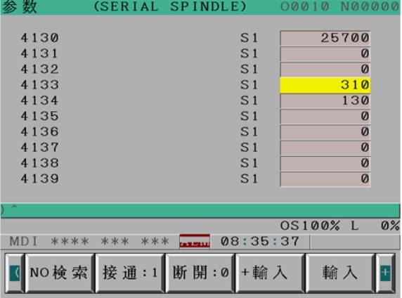(3) 设定主轴电动机标准初始化功能系统参数FANUC-31iB/0iD系统:参数4019#7设定为“1”，初始化结束该位自动为“0”;
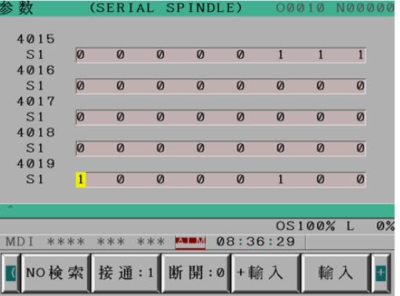3.2 数控机床主轴位置和速度检测装置选择及参数设定
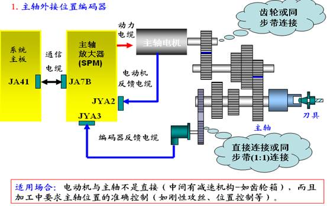主轴外接主轴独立编码器实现主轴准停控制的系统参数设定
| OC/OD系统 | 18/18i/Oi系统 | 设定值 | 说明 |
| 6500#0 | 4000#0 | 0/1 | 主轴和主轴电动机旋转方向相同/相反 |
| 6501#4 | 4001#4 | 0/1 | 主轴与编码器旋转方向相同/相反 |
| 6501#2 | 4002#1 | 1 | 使用主轴外接编码器为主轴位置反馈 |
| 6510#0 | 4010#0 | 0 | 电动机内装不带一转信号的传感器 |
| 6515#0 | 4015#0 | 1 | 主轴定向功能有效 |
| 6556-6559 | 4056-4059 | 实际设定 | 电动机与主轴各挡的齿轮比 |
主轴电动机内装传感器实现主轴准停控制的系统参数设定
| OC/OD系统 | 18/18i/Oi系统 | 设定值 | 说明 |
| 6500#0 | 4000#0 | 0/1 | 主轴和主轴电动机旋转方向相同/相反 |
| 6502#0 | 4002#0 | 1 | 使用电动机内装传感器为主轴位置反馈 |
| 6510#0 | 4010#0 | 1 | 电动机内装带一转信号的传感器 |
| 6515#0 | 4015#0 | 1 | 主轴定向功能有效 |
| 6556 | 4056 | 100 | 电动机与主轴的齿轮比为1：1 |
| OC/OD系统 | 18/18i/Oi系统 | 设定值 | 说明 |
| >6500#0 | 4000#0 | 0/1 | 主轴和主轴电动机旋转方向相同/相反 |
| >6502#0 | 4002#0 | 1 | 使用电动机内装传感器为主轴位置反馈 |
| 6504#2 | 4004#2 | 1 | 外接一转信号有效 |
| 6504#3 | 4004#3 | 0/1 | 接近开关为NPN/PNP类型 |
| 6510#0 | 4010#0 | 0 | 电动机内装不带一转信号的传感器 |
| 6515#0 | 4015#0 | 1 | 主轴定向功能有效 |
| 6556-6559 | 4056-4059 | 实际设定 | 电动机与主轴各挡的齿轮比 |
3.3 数控系统主轴速度串行数字控制及PMC控制程序的编制
控制方式
自动运行方式：通过加工程序指令（MO3/M04/M05)实现主轴正传、反转记停止的控制。
手动控制方式：通过机床操作面板的正传、反转、停止及点动键实施主轴手动状态下的正传/反转控制。
> PMC控制信号 PMC到CNC控制信号：
G70. 5:主轴正传控制信号 G70. 4:主轴反转控制信号 G30:主轴倍率信号 G33. 7:主轴速度PMC控制信号 G29. 6:主轴使能信号 G29. 4:主轴速度到达信号 G71. 1:主轴急停信号、CNC到PMC控制信号：F45. 0:主轴报警状态信号 F45. 1:主轴零速度状态信号 F45. 3:主轴速度到达信号
主轴手动和自动正反转控制指令编制
 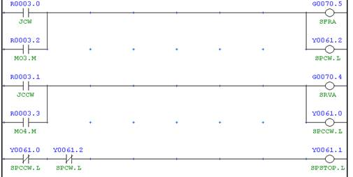
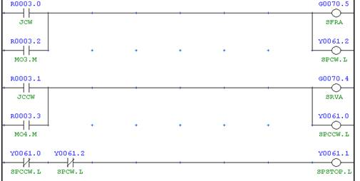
主轴自动控制速度倍率PMC编制
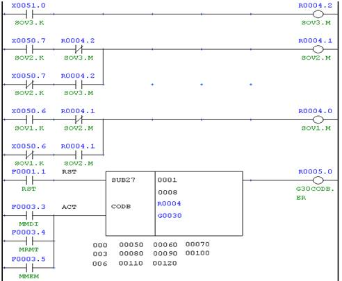主轴手动速度控制PMC编制
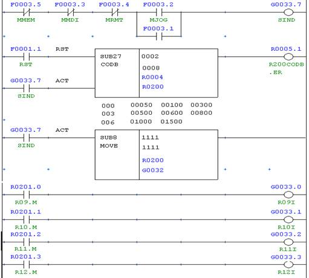主轴速度控制使能及速度到达信号检测PMC编制
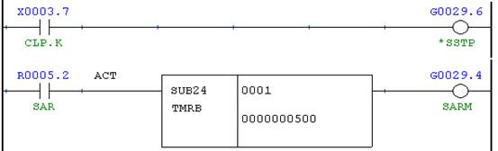主轴运行的必要参数
3741:主轴第一档最高速度；3736：主轴速度上限值1410：全轴空运行速度1430：各轴最大真切切削速度。
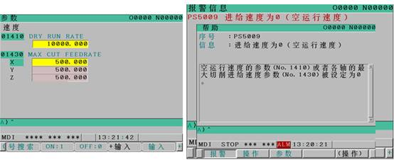系统部报警、主轴模块就绪时，主轴不转的故障诊断
1) 主轴旋转使能信号未就绪
通过系统梯形图或诊断号进行诊断：系统为G29.6，（正常为“1”）。如果为“0”，通过梯形图信号跟踪法具体判别，如主轴刀具夹紧信号未接通。
2）主轴倍率为零
通过系统梯形图或诊断号进行诊断：系统为G30信号是否为“0”，如实际机床倍率开关损坏。
3）主轴正转/反转信号未接通
通过系统梯形图或诊断号进行诊断：系统为G70.4 /G70.5信号是否为“1”，如万能转换主轴锁紧信号开关为接通。
4）系统主轴参数3741-3743、3736
检查主轴低速档位最高速度3741（如果有换挡还要检查3742-3743）设定值；及主轴最高转速限制参数3736。
5）系统主轴速度信号没有输出（系统主板不良）
通过系统梯形图或诊断号进行诊断：系统为F36.0-F37.3
6）主轴放大器故障
主轴模块的控制电路板不良；主轴模块逆变块损坏（励磁时没有输出）。
7）主轴电动机本身故障
电动机定子绕组断相或动力线不良；电动机与放大器连接的相序不符。
3.4 主轴定向准停功能、PMC编制、调整及故障诊断
1. 主轴定向准停功能及控制机理
在自动换刀的数控铣镗类机床，为保证自动换刀时主轴必须停止在某一固定的位置上（ 刀柄上的鍵槽对准主轴的端面鍵） 在加工精密孔系时，若每次都能在主轴固定的囡周位置上换刀，就能保证刀尖与主轴相 对位置的一致性，从而减少被加工孔的尺寸的分散度. 在多功能数控车床及加工中心中，主轴必须从起始位置（主轴原点位置）进行CS轴控制 或刚性攻丝。
（2）主轴定向准停PMC编制
1）系统主轴定向指令的编制
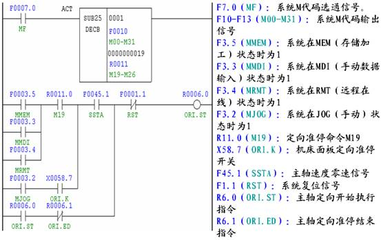2）系统主轴定向结束指令的编制
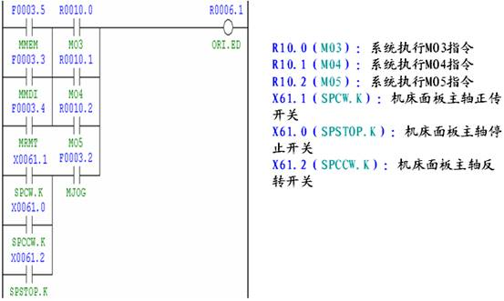3）系统主轴定向控制功能、完成及报警的编制
G70.6: 系统主轴定向准停控制功能
F45.7：系统主轴定向完成使能信号
Y60.6：机床面板定向准停指示灯
A1.3：主轴报警信息继电器
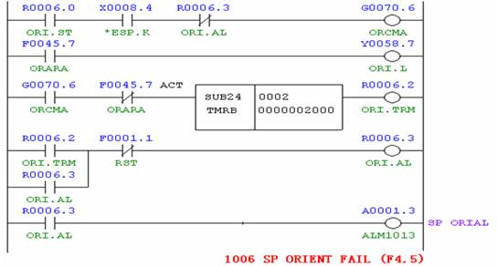 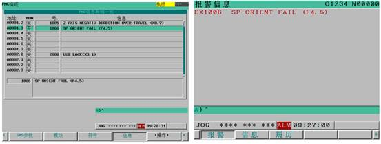
轴定向准停调试
位置的调整
1、设定No3117#1，定向位置参数NO4077清零;
7#1串行主轴的情形下，主轴位置跟踪功能是否有致）
2、执行M19定向，系统复位，手动调整位罝至所要求的位置：
3、现察诊断号445 (第一主轴位置反馈数），设定其到NO4077即可。